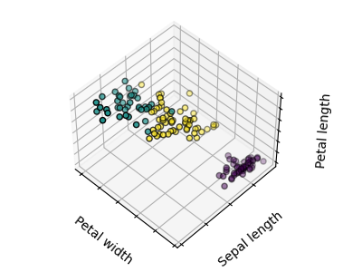
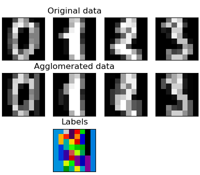

Aprendizaje no supervisado: búsqueda de representaciones de los datos¶
Conglomerado: grupo de observaciones¶
El problema resuelto en el conglomerado
Dado el conjunto de datos del iris, si supiéramos que hay 3 tipos de iris, pero no tuviéramos acceso a un taxónomo para etiquetarlos: podríamos intentar una tarea de conglomerado: dividir las observaciones en grupos bien separados llamados conglomerado.
Conglomerado de k-medias¶
Ten en cuenta que existen muchos criterios de conglomerado diferentes y algoritmos asociados. El algoritmo de conglomerado más sencillo es K-medias.
>>> from sklearn import cluster, datasets
>>> X_iris, y_iris = datasets.load_iris(return_X_y=True)
>>> k_means = cluster.KMeans(n_clusters=3)
>>> k_means.fit(X_iris)
KMeans(n_clusters=3)
>>> print(k_means.labels_[::10])
[1 1 1 1 1 0 0 0 0 0 2 2 2 2 2]
>>> print(y_iris[::10])
[0 0 0 0 0 1 1 1 1 1 2 2 2 2 2]
Advertencia
No hay ninguna garantía de que se recupere la verdad fundamental. En primer lugar, elegir el número correcto de conglomerados es difícil. En segundo lugar, el algoritmo es sensible a la inicialización y puede caer en mínimos locales, aunque scikit-learn emplea varios trucos para mitigar este problema.
Mala inicialización¶
8 conglomerados¶
verdad fundamental¶
No hay que sobreinterpretar los resultados del conglomerado
Application example: vector quantization
El análisis de conglomerados en general y KMeans, en particular, puede verse como una forma de elegir un número reducido de ejemplares para comprimir la información. El problema se conoce a veces como cuantización vectorial. Por ejemplo, esto se puede utilizar para posterizar una imagen:
>>> import scipy as sp
>>> try:
... face = sp.face(gray=True)
... except AttributeError:
... from scipy import misc
... face = misc.face(gray=True)
>>> X = face.reshape((-1, 1)) # We need an (n_sample, n_feature) array
>>> k_means = cluster.KMeans(n_clusters=5, n_init=1)
>>> k_means.fit(X)
KMeans(n_clusters=5, n_init=1)
>>> values = k_means.cluster_centers_.squeeze()
>>> labels = k_means.labels_
>>> face_compressed = np.choose(labels, values)
>>> face_compressed.shape = face.shape
Imagen en bruto¶
Cuantificación k-medias¶
Igualdad de intervalos¶
Histograma de la imagen¶
Conglomerado jerárquico aglomerado: Ward¶
Un método de Análisis de conglomerados jerárquicos es un tipo de análisis de conglomerados que pretende construir una jerarquía de conglomerados. En general, los distintos enfoques de esta técnica son:
Aglomerativo - enfoques ascendentes: cada observación comienza en su propio conglomerado, y los conglomerados se fusionan iterativamente de manera que se minimice un criterio de enlace. Este enfoque es especialmente interesante cuando los conglomerados de interés están formados por pocas observaciones. Cuando el número de conglomerados es grande, es mucho más eficiente desde el punto de vista computacional que k-medias.
Divisivo - enfoques descendentes: todas las observaciones comienzan en un conglomerado, que se divide iterativamente a medida que se desciende en la jerarquía. Para estimar un gran número de conglomerados, este enfoque es lento (debido a que todas las observaciones comienzan en un conglomerado, que se divide recursivamente) y estadísticamente mal planteado.
Conglomerado de conectividad restringida¶
Con el conglomerado aglomerativo, es posible especificar qué muestras pueden agruparse dando un gráfico de conectividad. Los grafos en scikit-learn se representan mediante su matriz de adyacencia. A menudo, se utiliza una matriz dispersa. Esto puede ser útil, por ejemplo, para recuperar regiones conectadas (a veces también denominadas componentes conectados) cuando se conglomera una imagen.

>>> from skimage.data import coins
>>> from scipy.ndimage.filters import gaussian_filter
>>> from skimage.transform import rescale
>>> rescaled_coins = rescale(
... gaussian_filter(coins(), sigma=2),
... 0.2, mode='reflect', anti_aliasing=False, multichannel=False
... )
>>> X = np.reshape(rescaled_coins, (-1, 1))
Necesitamos una versión vectorizada de la imagen. 'rescaled_coins' es una versión reducida de la imagen de las monedas para acelerar el proceso:
>>> from sklearn.feature_extraction import grid_to_graph
>>> connectivity = grid_to_graph(*rescaled_coins.shape)
Define la estructura gráfica de los datos. Píxeles conectados a sus vecinos:
>>> n_clusters = 27 # number of regions
>>> from sklearn.cluster import AgglomerativeClustering
>>> ward = AgglomerativeClustering(n_clusters=n_clusters, linkage='ward',
... connectivity=connectivity)
>>> ward.fit(X)
AgglomerativeClustering(connectivity=..., n_clusters=27)
>>> label = np.reshape(ward.labels_, rescaled_coins.shape)
Aglomeración de características¶
Hemos visto que la dispersión podría utilizarse para mitigar la maldición de la dimensionalidad, es decir, una cantidad insuficiente de observaciones en comparación con el número de características. Otro enfoque consiste en fusionar características similares: aglomeración de características. Este enfoque puede aplicarse mediante el conglomerado en la dirección de las características, es decir, agrupando los datos transpuestos.
>>> digits = datasets.load_digits()
>>> images = digits.images
>>> X = np.reshape(images, (len(images), -1))
>>> connectivity = grid_to_graph(*images[0].shape)
>>> agglo = cluster.FeatureAgglomeration(connectivity=connectivity,
... n_clusters=32)
>>> agglo.fit(X)
FeatureAgglomeration(connectivity=..., n_clusters=32)
>>> X_reduced = agglo.transform(X)
>>> X_approx = agglo.inverse_transform(X_reduced)
>>> images_approx = np.reshape(X_approx, images.shape)
métodos transform y inverse_transform
Algunos estimadores exponen un método de transform, por ejemplo para reducir la dimensionalidad del conjunto de datos.
Descomposiciones: de nombres de etiquetas a componentes y cargas¶
Componentes y cargas
Si X son nuestros datos multivariantes, el problema que intentamos resolver es reescribirlo sobre una base observacional diferente: queremos aprender las cargas L y un conjunto de componentes C tal que X = L C. Existen diferentes criterios para elegir los componentes
Análisis de componentes principales: PCA¶
Análisis de componentes principales (PCA) selecciona los componentes sucesivos que explican la máxima varianza de la señal.
La nube de puntos abarcada por las observaciones anteriores es muy plana en una dirección: una de las tres características univariantes puede calcularse casi exactamente con las otras dos. PCA encuentra las direcciones en las que los datos no son planos
Cuando se utiliza para transformar los datos, el PCA puede reducir la dimensionalidad de los datos proyectándolos en un subespacio principal.
>>> # Create a signal with only 2 useful dimensions
>>> x1 = np.random.normal(size=100)
>>> x2 = np.random.normal(size=100)
>>> x3 = x1 + x2
>>> X = np.c_[x1, x2, x3]
>>> from sklearn import decomposition
>>> pca = decomposition.PCA()
>>> pca.fit(X)
PCA()
>>> print(pca.explained_variance_)
[ 2.18565811e+00 1.19346747e+00 8.43026679e-32]
>>> # As we can see, only the 2 first components are useful
>>> pca.n_components = 2
>>> X_reduced = pca.fit_transform(X)
>>> X_reduced.shape
(100, 2)
Análisis de componentes independientes: ICA¶
Análisis de componentes independientes (ICA) selecciona los componentes de forma que la distribución de sus cargas contenga la máxima cantidad de información independiente. Es capaz de recuperar señales independientes no gaussianas:

>>> # Generate sample data
>>> import numpy as np
>>> from scipy import signal
>>> time = np.linspace(0, 10, 2000)
>>> s1 = np.sin(2 * time) # Signal 1 : sinusoidal signal
>>> s2 = np.sign(np.sin(3 * time)) # Signal 2 : square signal
>>> s3 = signal.sawtooth(2 * np.pi * time) # Signal 3: saw tooth signal
>>> S = np.c_[s1, s2, s3]
>>> S += 0.2 * np.random.normal(size=S.shape) # Add noise
>>> S /= S.std(axis=0) # Standardize data
>>> # Mix data
>>> A = np.array([[1, 1, 1], [0.5, 2, 1], [1.5, 1, 2]]) # Mixing matrix
>>> X = np.dot(S, A.T) # Generate observations
>>> # Compute ICA
>>> ica = decomposition.FastICA()
>>> S_ = ica.fit_transform(X) # Get the estimated sources
>>> A_ = ica.mixing_.T
>>> np.allclose(X, np.dot(S_, A_) + ica.mean_)
True